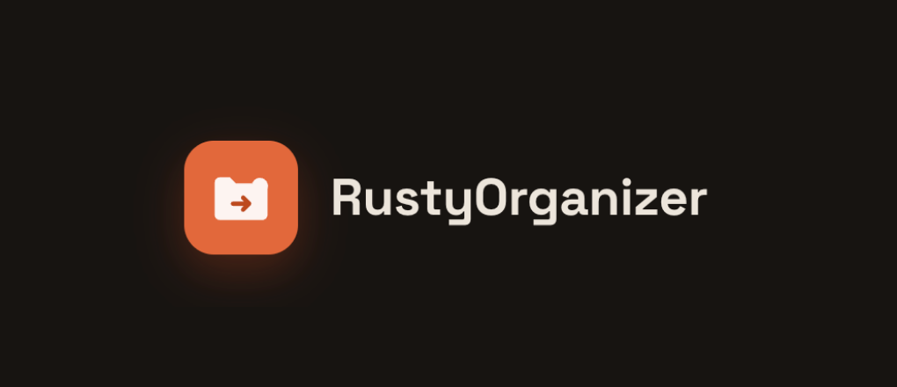

Rusty Organizer
A Rust CLI that sorts a messy folder into category folders by rule, finds byte-identical duplicates, and shows every move before it happens.

What I built & why
A download folder turns into a junk drawer fast, and most "cleanup" tools either move things around silently or need a GUI. Rusty Organizer is a command-line tool that sorts a directory into category folders by rule, finds byte-identical duplicates with a content hash, and can keep watching a folder for new files.
The whole tool is built on the assumption that it will sometimes be wrong. Every run prints the full plan and waits for confirmation; --dry-run stops there. Nothing is overwritten, name clashes become report (1).pdf, and applied moves are logged to a per-folder JSONL history so --undo can walk the last run backwards. Watch mode only ever moves, never deletes.
Internally it is a pipeline of pure functions with one impure end: a scanner reads the folder, a pure planner runs the classifier and duplicate detection to produce a Plan, and a single executor is the only code that touches the filesystem. The CLI, the terminal UI, and watch mode are three front ends that each build and confirm the same Plan.
Why this stack
- RustThe tool moves and deletes files, so bugs are costly. Ownership rules keep the safety model simple: the executor owns the plan while it runs and is the only code that can call
fs::renameorfs::remove_file. - clapOne positional directory argument plus flags that stack (
--dedupe,--dry-run,--undo,-w), with generated help. - ratatuiPowers the interactive plan review: toggle individual changes, pick which duplicate to keep, then apply. An event loop that stays responsive without ever writing to disk.
- BLAKE3Fast content hashing to confirm two size-colliding files are actually byte-identical before either is flagged as a duplicate.
- notifyBacks watch mode, which keeps a folder sorted as files arrive, moves only.
- serde + tomlOptional
config.tomlrules: match on name, extension, size or age; template targets likePhotos/{year}/{month}; first match wins.
The honest tradeoff: content-hashing every size-colliding file is slower than trusting names, and the undo log only covers moves, so a deleted duplicate is gone. Both were deliberate, correct over fast for the dangerous part, and no pretending deletes are reversible.
How it works
Embedded preview of the live how it works demo site. Open it in a new tab if it doesn't load here.